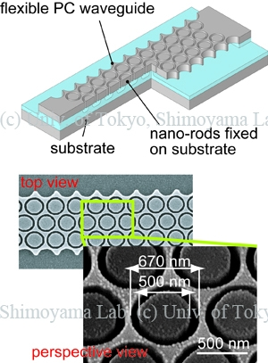

フォトニック結晶の機械的変調
AFMカンチレバーを用いたフォトニック結晶導波路の透過率チューニング

本研究の目的は、2次元スラブフォトニック結晶（PhC）導波路の空孔の1つにAFMカンチレバーを挿入することで透過率を調整することである。2次元スラブフォトニック結晶はシリコンエアブリッジ導波路上に三角格子状の円柱形状の空孔を持つ。PhCはフォトニックバンドギャップを持つため光反射器として機能する。まず、有限差分時間領域法（FDTD法）を用いて、カンチレバーの挿入がPhC導波路の透過率に及ぼす影響を評価した。次に、電子線（EB）リソグラフィとDRIEにより、PhC導波路を製作した。最後に、その空孔の1つにAFMカンチレバーを挿入し透過率を計測した。カンチレバーの挿入によりの透過率は約2倍となった。
Publications
- Tomoyuki Takahata, Kazunori Hoshino, Kiyoshi Matsumoto, Isao Shimoyama, “Transmittance Tuning of Photonic Crystal Reflectors using an AFM Cantilever,” Sensors and Actuators A: Physical, vol. 128, no. 1, pp. 197-201, 2006. [Paper]
- Tomoyuki Takahata, Kazunori Hoshino, Kiyoshi Matsumoto, Isao Shimoyama, “Photonic Crystal Tuned by Cantilever,” 18th IEEE International Conference on Micro Electro Mechanical Systems (MEMS '05), pp. 112-115, Miami, Fulorida, USA, January 30-February 3, 2005. [Proceedings]
フレキシブル導波路とナノロッドを用いたフォトニック結晶減衰器
フレキシブル導波路と二層ナノロッドを用いた2次元フォトニック結晶（2D-PC）減衰器の機械的調整方法を考案した。2D-PCはシリコンスラブ導波路の中に空孔の三角格子を持つ。PCはフォトニックバンドギャップを持っているため、光減衰器として機能する。PCの直径650 nmの空孔に直径500 nmナノロッドを挿入すると、空孔内の屈折率が変化する。これを利用して、挿入深さによって透過率を調整することができることを発見した。このデバイスを電子線直接描画によるアライメント不要の簡易プロセスで作製し、入射波長1500nmで7dBの減衰を実証した。
Publications
- Tomoyuki Takahata, Kiyoshi Matsumoto, Isao Shimoyama, “A Wide Wavelength Range Optical Switch Using a Flexible Photonic Crystal Waveguide and Silicon Rods,” Journal of Micromechanics and Microengineering, vol. 20, no. 7, article no. 075009, 2010. [Paper]
- Tomoyuki Takahata, Kiyoshi Matsumoto, and Isao Shimoyama, “Effect of Slab Deflection on a Mechano-Optic Modulator,” 4th IEEE International Conference on Group IV Photonic, Tokyo, Japan, 19-21 September, 2007. [Proceedings]
- Tomoyuki Takahata, Kiyoshi Matsumoto, and Isao Shimoyama, “Mechanical Tuning of 2D Photonic Crystal with MEMS-based Electrostatic Actuator,” The 19th Annual Meeting of the IEEE Lasers & Electro-Optics Society, Montreal, Canada, 29 October-2 November, 2006. [Proceedings]
- Tomoyuki Takahata, Kazunori Hoshino, Kiyoshi Matsumoto, and Isao Shimoyama, “Photonic Crystal Attenuator with A Flexible Waveguide and Nano-Rods,” 19th IEEE International Conference on Micro Electro Mechanical Systems (MEMS '06), Istanbul, Turkey, January 22-26, 2006. [Proceedings]